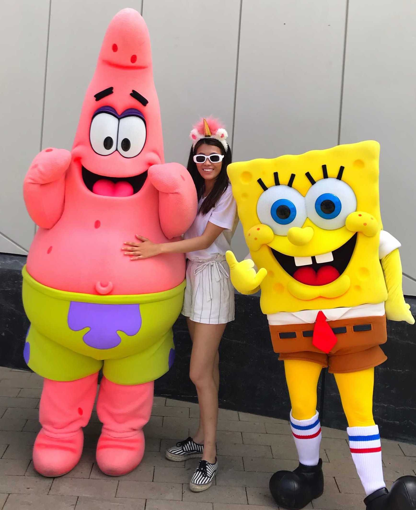

Jordan received his PhD in Microbiology and Immunology from the University of Western Ontario where he was drawn to human microbiome research as an undergraduate. Working with Gregor Reid at the Canadian Centre for Human Microbiome and Probiotic Research, he studied how lactobacilli and gut microbes interact with environmental pollutants which included stints in Mwanza Tanzania, and the Pasteur Institute in Lille. For his postdoctoral training, he moved to UC San Francisco to work with Peter Turnbaugh focusing on merging computational and experimental methods to dissect the interactions between microbes, diet, drugs, and the host. Jordan has been fortunate to receive funding from the Natural Sciences and Engineering Research Council of Canada, The Canadian International Development Agency, and continuing funding from the NIH/ National Institute of Allergy and Infectious Diseases. When not in the lab, Jordan enjoys playing music (mediocrely but loudly), and experimenting with fermentation at home. A CV is available for download here .

Susan will be the first student in the Bisanz Lab! She received her bachelor’s degree in Biotechnology and Molecular Biology from Rochester Institute of Technology and worked as a research technician at Litron Laboratories designing a high-throughput genetic toxicology testing, assaying genotoxins, and watering the plants. Susan will be studying synthetic microbiome transplants for C. difficile infection.
Two truths and one lie: I love chocolate. I love chocolate flavored food. I am allergic to bananas.